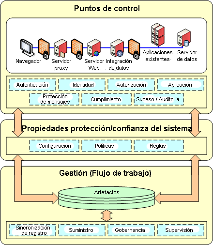

| Concepto: Patrones de seguridad |
|
|
| Elementos relacionados |
|---|
IntroducciónLa "seguridad" se percibe normalmente como una disciplina compleja y endiablada. "Patrón" es un término del que la mayoría de la gente cree tener un conocimiento intuitivo porque es parte natural de la educación humana reconocer y generalizar sobre patrones percibidos. Para este ejercicio tomaremos las siguientes como definiciones de trabajo:
Por tanto, intentar relacionar los dos términos, "seguridad" y "patrones" puede presentar cierta tensión. Ha habido varios intentos de producir patrones de seguridad (consulte el Apéndice A). Este documento ha intentado recopilar y codificar el material reunido durante varios años por diversos profesionales de la seguridad de diversas fidelizaciones del cliente que crearon un "hombre de paja" para patrones de seguridad de IBM. La definición de trabajo para "patrones de seguridad" en el contexto de este documento es:
Dentro de la comunidad de desarrollo de software resulta actualmente difícil establecer [3] una metodología para el desarrollo de patrones.
El punto fundamental de confusión es que los patrones, como la belleza, dependen del cristal con que se miran. De este modo, si reúne a 5 personas especialistas en seguridad, definirán patrones específicos a su área de interés. Por esta razón, haré un breve inciso para hablar de los "roles" que ayudan a agrupar los patrones según la comunidad de interés. ¿Quién es el primero?En el mundo del software, hay personas que diseñan cosas, personas que hacen dibujos y escriben documentos, personas que escriben código y personas que juntan todas las piezas y ofrecen sistemas informáticos. Cada organización probablemente tenga su propia forma de definir las tareas, pero existen roles arquetípicos.
En cualquier organización mediana o grande, las tareas se asignan a distintas personas en función de sus responsabilidades en la organización. Normalmente, los analistas y las aplicaciones empresariales necesitan proteger los activos informativos de la empresa. Controlan la creación de los requisitos de las aplicaciones empresariales para seguridad. Arquetipo 1 : Analista empresarialEn organizaciones que tengan que cumplir con requisitos legales o normativos hay a veces un conjunto específico de tareas de nivel "C" para supervisar y hacer cumplir estas normas. Los comités de altos cargos y los encargados de políticas trabajan normalmente con analistas empresariales para compilar un conjunto de directrices y requisitos corporativos que son los fundamentos de las buenas prácticas empresariales. Arquetipo 2: Responsable (privado) de seguridadLa mayoría de las organizaciones de todo tamaño tienen hoy en día un cortafuegos. Incluso los usuarios individuales en sus hogares establecen cortafuegos para sus redes domésticas. Alguien debe configurar y mantener estos dispositivos. Algunos son simples, otros complejos. Arquetipo 3: Responsable de seguridad de redesCuando se trata de entender y seleccionar realmente algún tipo de mecanismo de seguridad para cumplir con los requisitos especificados por la empresa, hay personas que trabajan juntas para implementar seguridad. Arquetipo 4: Arquitecto de seguridadDesarrollador de seguridad, implementador de seguridad, autor de políticas de seguridad, administrador de políticas de seguridad, administrador de sistemas de seguridad Estudio de patrones por rolEl propósito de este documento y del lote de diapositivas que lo acompañan es proporcionar un "hombre de paja" para identificar e ilustrar patrones de seguridad comunes existentes dentro de la comunidad de analista empresarial/cliente de IBM. La tarea del esfuerzo de los patrones de e-business es la reconciliación del volumen de información en una abstracción que sea lo suficientemente general para que un profesional no relacionado con la seguridad pueda captarla y siga manteniendo suficiente contexto para ofrecer un apuntalamiento concreto en la comunidad de la seguridad. IBM es un microcosmos de la gigante industria del software en la que representa tanto el desarrollo del producto como el desarrollo del servicio de aplicación, así como productos de middleware para gestión y despliegue de aplicaciones. Existen varias metodologías para diseñar y desarrollar aplicaciones seguras (por ejemplo, MASS, Open Group, JAAS) pero algunas de ellas están destinadas a los profesionales experimentados de la seguridad que tengan un conocimiento profundo de la tecnología. Por lo tanto, un grupo de patrones serán "patrones arquitectónicos de seguridad". Las arquitecturas detalladas de seguridad son necesarias para desarrollar tecnología para ofrecer soluciones de seguridad y, llegado el caso, los patrones hacen referencia a ellas pero aquí no se trata de documentar todos los patrones arquitectónicos de seguridad. ¿Qué es la seguridad?La IETF es una organización que ha sido fundamental en el desarrollo de Internet tal como lo conocemos hoy día. La IETF estableció un glosario de seguridad en el 2000 que contiene casi todos los conceptos básicos de seguridad informática. Se realizan mejoras, se introducen o desechan tecnologías y mecanismos pero las definiciones básicas siguen siendo las mismas. Los componentes más comunes que se utilizan hoy en día para la seguridad incluyen lo siguiente: identificación y autenticación, autorización, garantía, auditoría, protección de mensajes, confidencialidad e integridad. En lugar de sólo proporcionar patrones para cada mecanismo de seguridad individual, este "hombre de paja" ha observado los mecanismos de seguridad individuales para identificar características comunes. Este documento técnico se centra en la identificación de un "patrón de solución de seguridad". Estos elementos comunes proceden de la observación de un conjunto detallado de elementos de patrón para cada mecanismo de seguridad (por ejemplo, autenticación: nombre de usuario, contraseña, Kerberos, PKI) y del posterior compendio de todas aquellas cosas comunes en la autenticación, la autorización, la garantía, etc. La búsqueda de elementos comunes en todos los patrones de seguridad dio como resultado la identificación de 3 elementos de subpatrón que están presentes de alguna forma en todo tipo de solución de seguridad:
 Para mostrar cómo se puede correlacionar cada mecanismo de seguridad individual con estos tres subelementos ofrecemos un ejemplo de "identificación". De nuevo, procedente del glosario de la IETF:
La distinción de una persona de otra al invocar una aplicación es un patrón al que hace frente toda empresa. Las estrategias para solucionar el problema empresarial varían según el número y la diversidad de los elementos implicados en la aplicación y su entorno de despliegue. Algunas empresas dejan la decisión sobre "denominación" a aplicaciones individuales o quizás a un grupo de aplicaciones en una línea de empresa. Algunas empresas están obligadas por el software en sus centros de datos. Algunas han vinculado estrechamente el entorno de despliegue de aplicaciones a un riguroso conjunto de mecanismos. No obstante, hay un punto en el que un "identificador" es presentado a una aplicación, y esto se considera un patrón de "punto de control de seguridad" con fines identificativos. La cantidad y el tipo de información necesarios también varía significativamente. Un identificador puede ser un nombre de persona real (por ejemplo, Maryann Hondo) o un seudónimo (por ejemplo, mhondo). El identificador puede ser globalmente exclusivo (un UUID) o puede ser exclusivo dentro de un espacio de nombres calificados (por ejemplo, mhondo@us.ibm.com). Características de un patrón de seguridad
Referencias
|
© Copyright IBM Corp. 1987, 2006. Reservados todos los derechos. |